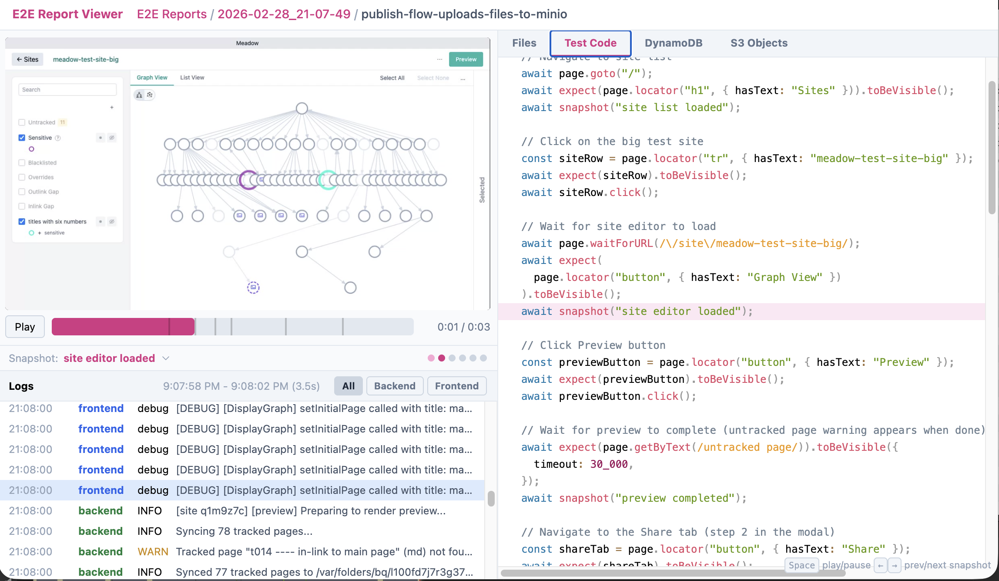

site for kriston - changelog
^ site for kriston - changelog
2026-03-06
I've started making my way though Annotated version of 'Welcome to Gas Town' for the considering dark software factories Meadow.
In the process I got really Stoked about MarkAgent and Meadow!
Probably a few more days before I finish reading Gas Town, but I can tell it's going to warp my thinking in a good way.
2026-03-04
Review is so important. You need to heavily emphasize agent task -- change review apps
Every agent in a worktree now generates videos for an ever-increasing set of scenarios for every feature: example - screencast - videos filtered by scenario docs
2026-03-01
I made a 1:18 youtube video https://www.youtube.com/watch?v=e1I1PYgpXfQ that shows off some an e2e test suit run report review tooling I've been working on. Here's a screencap from that video...

Some of my favorite things on the internet are explorable explanations. Specifically Bartosz-style explorable explanation like b How an Internal Combustion Engine works. Unbelievably good stuff. complex but highly-legible things are very engaging, and I want the custom developer tooling to be engaging, too.
Here's the full page that accompanies the video: example - meadow e2e tests -- test suite run review tool - logs and other assets synced with automatically-created video
2026-02-27
Orienting around dark software factories
dark software factorys. Specifically, these two mind-bending posts:
After reading them I realized I needed to do a to remove - Agentic engineering practices - scorecard 2026-04 and address some pretty significant gaps.
You'll see in the b OpenAI harness engineering 2026-02 a pretty heavy emphasis on what I'm calling documentation context graph. You won't be surprised that such a thing really clicked with me, because it's very close to how I've been structuring my system-related engineering notes for a while.
For example, here's how I write big features, now: example - describe a desired state and have the coding agent reconcile to it
Random recommendations
This is really good in practice. I use it all the time now: example - using DeepSearch in Claude Code in a terminal in Obsidian to find a page about a software concept